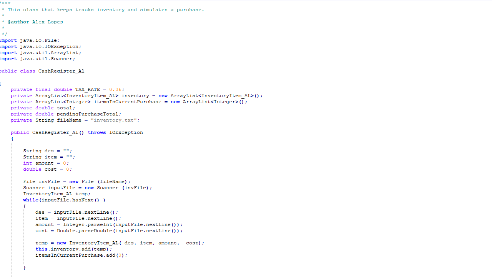
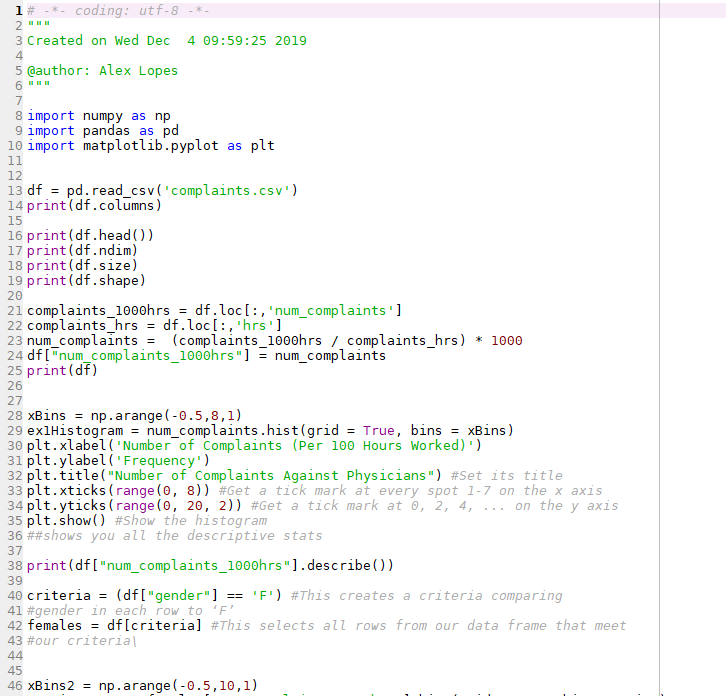

In spring of 2020 I took application development class using the programming language java. This class was fairly challenging for me but for our final project we had to develop a cashier system. This was the first time I developed something complex with the use of multiple files in a programming language. As this was something I was not used to doing but I learned a lot on how java works and how to program in a more efficient manner.
Code about my Python project
In fall of 2019 I took a data science class that was using the python language. While I was learning the python language I realized how much I enjoyed this language over the other that I knew. It was a much easier programming language that was much more forgiving on the programmer. In one of our projects we had to code the tortoise and the hare race. While using random numbers it was very interesting how the python language can handle the code and the way the race ran was like a game! It was a very fun project and very much enjoyed the class!
